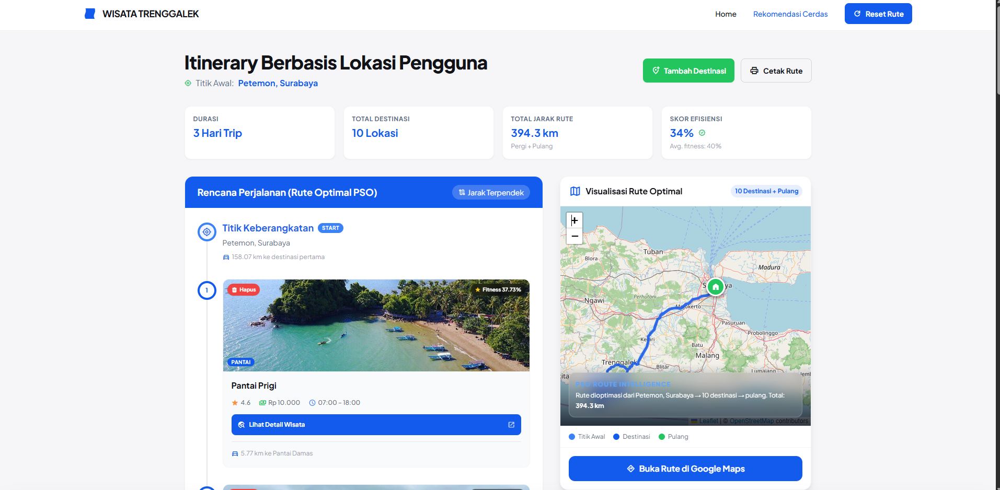
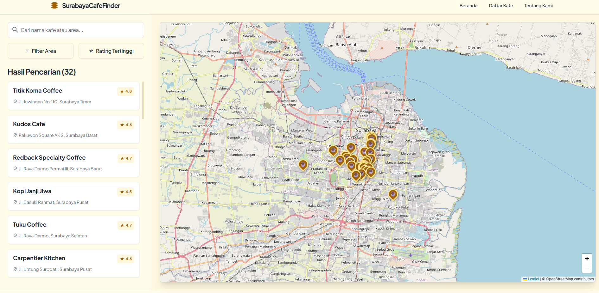
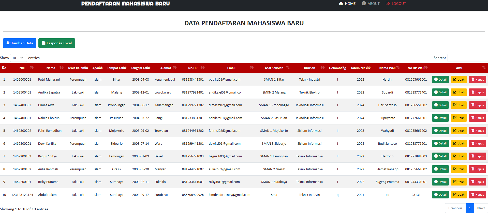
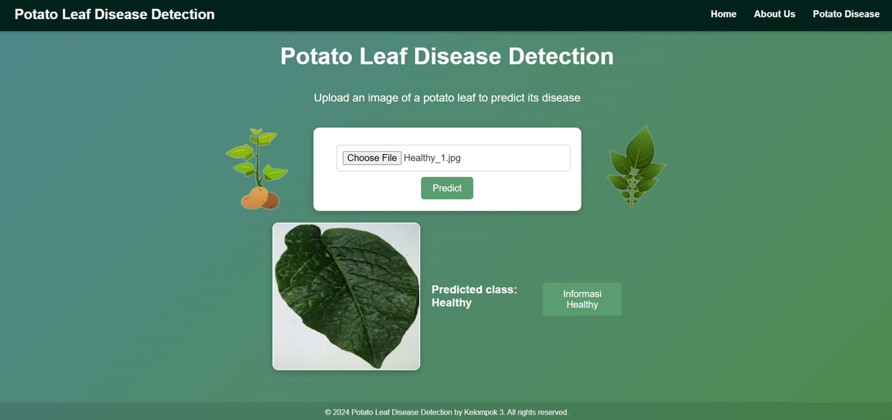
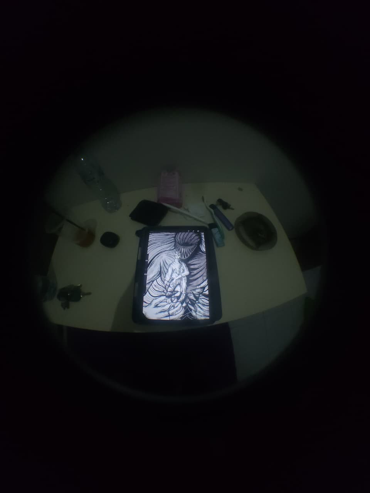
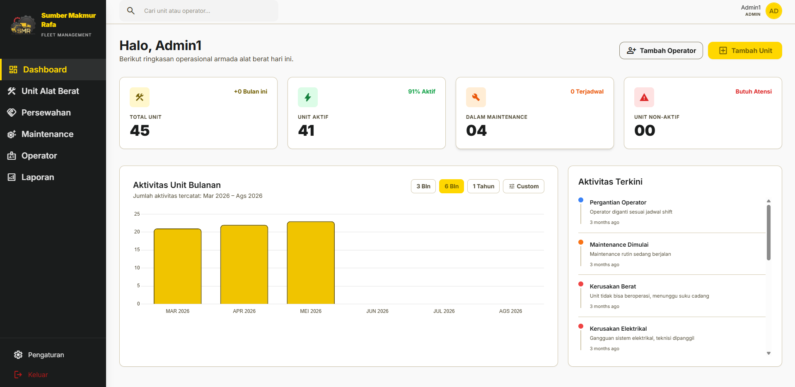

Karya & Proyek
Koleksi proyek web dan ilustrasi digital yang dikerjakan dari 2022 hingga sekarang.

Sistem Informasi Pariwisata Trenggalek
2026PHP · MySQL · PSO Algorithm
Sistem informasi pariwisata Kabupaten Trenggalek dengan rekomendasi wisata menggunakan metode Particle Swarm Optimization (PSO).

Sistem Informasi Polda
2024Laravel · MySQL · Backend
Sistem manajemen data telekomunikasi kepolisian — mencakup pengelolaan data Alkom, Tower, dan Repeater.

Anniversary Website
2024HTML · CSS · JS · Netlify
Website interaktif untuk peringatan anniversary — galeri foto otomatis, surat cinta, animasi kucing berjalan, dan musik latar.

Kafe Web
2025HTML · CSS · JavaScript
Website multi-halaman untuk kafe — daftar coffee shop, detail menu, halaman about, dan kontak dengan layout responsif.

Sistem Data Mahasiswa
2023PHP · MySQL · CRUD
Aplikasi web untuk manajemen data mahasiswa — CRUD dengan autentikasi login dan register berbasis PHP native dan MySQL.

Deteksi Penyakit Daun Kentang
2024Python · TensorFlow · Flask · Deep Learning
Aplikasi web deteksi penyakit daun kentang menggunakan deep learning — petani unggah foto, sistem beri diagnosis akurat.

Ilustrasi Karakter Original
2023–2024Ilustrasi Digital · Character Design
Koleksi desain karakter orisinal untuk komunitas server online. Berbagai gaya dan ekspresi karakter.

Fleet Management System
2026Laravel · MySQL · Chart.js · Dashboard
Sistem manajemen armada alat berat untuk CV Sumber Makmur Rafa — monitoring unit, operator, maintenance, dan persewaan dalam satu dashboard terpadu.